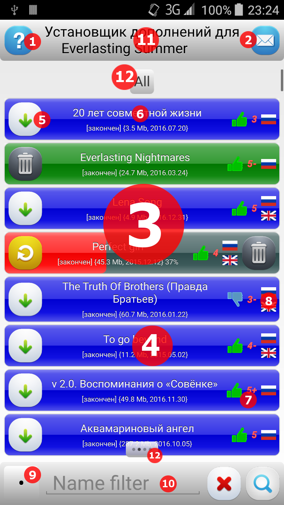
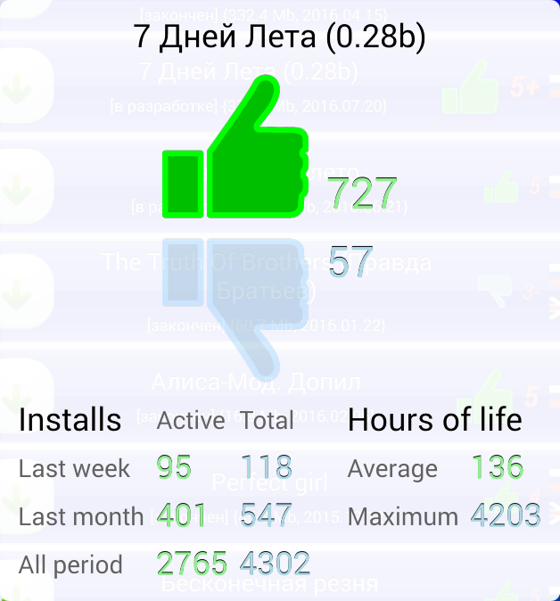

Загрузчик дополнений и модификаций для визуальной новеллы «Бесконечное Лето»
Руководство пользователя
Оглавление
1.Назначение приложения
2.Общий вид интерфейса
3.Статусы дополнений и производимые с ними действия
4.Система оценки дополнений
5.Сортировка и фильтрация
6.Основное меню. Продвинутые возможности
7.ЧаВО
1.Назначение приложения
Загрузчик предоставляет пользователю интерфейс для удобного доступа к каталогу дополнений, фильтров и модификаций визуальной новеллы «Бесконечное Лето».
Дополнения, содержащиеся в каталоге, адаптированы для платформ Android и iOS, и прошли проверку на работоспособность.
Основными функциями загрузчика являются — просмотр каталога с применением различных фильтров, просмотр информации о конкретном дополнении, установка и
удаление дополнений, обновление установленного дополнения при появлении новых версий на сервере загрузчика. Также предоставляется возможность оценки
дополнения и просмотра оценок, поставленных другими пользователями.
2.Общий вид интерфейса

На иллюстрации отмечены следующие элементы пользовательского интерфейса:
- Кнопка вызова этого руководства. Руководство будет автоматически показано при первом запуске приложения, после установки, или обновления.
- Кнопка показа короткого текстового сообщения, оставленного пользователям администратором сервера. Если администратор обновил сообщение и оно еще не
прочитано, кнопка будет мигать. Во время отображения той или иной информационной панели, данная кнопка превращается в красный крест, позволяющий закрыть
эту панель. У пользователей Android эта же функция продублирована нажатием аппаратной кнопки «назад».
- Список дополнений, как установленных, так и доступных для загрузки. Тонкая серая полоска справа является скроллбаром, связанным с этим списком.
- Одно дополнение.
- Кнопка действия над дополнением (см. раздел 3).
- Название, статус / категория, размер и дата последнего обновления дополнения на серверах. При нажатии на название откроется веб-страница, содержащая
информацию о дополнении. Если дополнение находится в статусе ошибка (красный цвет), то при нажатии будут показаны подробности этой ошибки.
- Оценка дополнения. При нажатии на этот элемент можно поставить свою оценку, или изменить ранее поставленную (см. раздел
4).
- Список языков, на которые переведено дополнение. На данный момент он ограничен русским, английским и испанским.
- Кнопка сортировки (см. раздел 5).
- Фильтр по названию (см. раздел 5).
- Заголовок приложения. При длительном нажатии на него отображается основное меню со специальными действиями. У пользователей Android эта же функция
продублирована нажатием аппаратной кнопки «меню» (см. раздел 6).
- Индикаторы страниц «Не установленное», «Все подряд», «Установленное» и «Недокачанное». Чтобы переключать страницы, ведите жестом свайп вправо, или
влево, пока точка на индикаторе снизу не изменит свою позицию, затем отпускайте.
3.Статусы дополнений и производимые с ними действия
-
Данные о дополнении загружаются с сервера, действия недоступны.
-
Дополнение доступно для загрузки. При нажатии на кнопку с зеленой стрелкой начнется его загрузка.
-
Дополнение загружается. Синяя полоса на фоне элемента показывает прогресс загрузки, нажатие на кнопку с красным крестом отменит загрузку. При
возникновении ошибки в процессе загрузки приложение попытается докачать дополнение с места обрыва 3 раза, с интервалом в 3 секунды, после чего перейдет в
состояние «ошибка».
-
Дополнение загрузилось и устанавливается. Зеленая полоса на фоне элемента показывает прогресс распаковки, нажатие на кнопку с красным крестом отменит
процесс.
-
В процессе загрузки, либо распаковки дополнения произошла ошибка. При нажатии на название дополнения будут показаны подробности, при нажатии на кнопку с
круглой стрелкой будет предпринята повторная попытка совершить неудавшееся действие, если это ошибка загрузки, будет предпринято 3 попытки докачки с
места обрыва с интервалом в 3 секунды. При нажатии на кнопку с мусорной корзиной недокачанное дополнение будет удалено.
-
Дополнение загружено, распаковано и установлено. Запустите «Бесконечное Лето», в меню игры нажмите на «Инструменты», в открывшемся списке вы увидите
подпункт «Моды». При выборе этого подпункта отобразится список дополнений, среди которых будут и установленные через загрузчик:
При нажатии на кнопку с мусорной корзиной дополнение будет удалено.
-
На серверах найдена версия дополнения, которая новее, чем установленная. Можно либо обновить дополнение, нажав кнопку с синей стрелкой, либо удалить его,
нажав кнопку с мусорной корзиной. При обновлении дополнения зачастую становятся неработоспособны предыдущие сохранения, будьте осторожны!
-

Дополнения, установленные пользователем, но более недоступные на серверах, отображаются более бледным зеленым цветом. При нажатии на кнопку с мусорной
корзиной дополнение будет удалено и повторно скачать вы его уже не сможете!
4.Система оценки дополнений
В правой части элемента дополнения находится его коллективная оценка. Сначала там отображается маленький листик  , что означает, что данные об оценке еще загружаются с сервера. Если ни один человек еще не
выставил оценку, листик просто станет крупнее по окончании загрузки данных. Если дополнение кем-либо оценено, то отображается красным цветом «школьная» 5ти
балльная оценка от 1 до 5+. Перед оценкой стоит иконка неодобрения
, что означает, что данные об оценке еще загружаются с сервера. Если ни один человек еще не
выставил оценку, листик просто станет крупнее по окончании загрузки данных. Если дополнение кем-либо оценено, то отображается красным цветом «школьная» 5ти
балльная оценка от 1 до 5+. Перед оценкой стоит иконка неодобрения
 , если оценка ниже тройки, в противном случае отображается
иконка одобрения
, если оценка ниже тройки, в противном случае отображается
иконка одобрения  . Если пользователь уже голосовал за это
дополнение раньше, то иконка и оценка отображаются более крупно и жирным шрифтом. При нажатии на оценку (или листик), становится доступен диалог
голосования:
. Если пользователь уже голосовал за это
дополнение раньше, то иконка и оценка отображаются более крупно и жирным шрифтом. При нажатии на оценку (или листик), становится доступен диалог
голосования:

Если пользователь уже голосовал за это дополнение раньше, то его выбор отображается сплошным цветом в контраст полупрозрачному. При нажатии на большое
изображение руки, она подсветится, а на сервер отправится пользовательская оценка.
Рядом с «руками» отображается количество пользователей, проголосовавших «за» и «против».
Ниже доступна статистика установок данного дополнения за последнюю неделю, месяц, и за все время существования. Она разделена на 2 столбца — активные
установки, которые еще не удалены пользователями, и общее количество установок, включая уже удаленные.
Рядом можно увидеть время жизни дополнения от установки до удаления, среднестатистическое и максимальное.
5.Сортировка и фильтрация
При нажатии на кнопку, находящуюся в левом-нижнем углу, появляется меню, позволяющее выбирать различные режимы сортировки. При старте приложения
автоматически производится сортировка «As server». Список всех режимов следующий:
-
As server [•]
Сортировка по категориям, внутри каждой категории — по названию. Категории сортируются в следующем порядке:
- окончен
- в разработке
- заморожен
- демо
- надстройка
- обучаловка
-
By name a→Z [aZ↑]
Сортировка по названию, в порядке возрастания.
-
By name Z→a [Za↓]
Сортировка по названию, в порядке убывания.
-
By size 1→99 [Sz↑]
Сортировка по размеру, в порядке возрастания.
-
By size 99→1 [Sz↓]
Сортировка по размеру, в порядке убывания.
-
By date 1.1.1970 → 12.12.2015 [Dt↑]
Сортировка по дате публикации на сервере, в порядке возрастания.
-
By date 12.12.2015 → 1.1.1970 [Dt↓]
Сортировка по дате публикации на сервере, в порядке убывания.
-
By score [5+]
Чем выше оценка, тем выше отображается дополнение.
-
By votes count [웃]
Чем больше человек проголосовало за дополнение (и его оценка, как следствие - точнее), тем выше оно отображается.
-
By active installs [I+]
Чем больше у дополнения активных установок (т. е. оно установлено и еще не удалено), тем выше оно отображается.
-
By total installs [I•]
Чем больше у дополнения было установок вообще (в том числе и уже удаленных), тем выше оно отображается.
-
By hours of life [Tm]
Чем больше у дополнения среднее время жизни (от установки до удаления), тем выше оно отображается.
Перед сортировкой по размеру, дате, оценке, или количеству голосов, имеет смысл дождаться полной загрузки этих данных с сервера, иначе не все дополнения
будут отсортированы правильно.
Справа от кнопки сортировки находится поле фильтрации по имени. При вводе набора слов (или их частей) отображаются все дополнения, в названии которых
содержится хотя бы одно перечисленное слово. Слова меньше 3х букв игнорируются, чем первее в запросе слово, тем его вес больше, а результаты в списке —
выше.
6.Основное меню. Продвинутые возможности
При длительном нажатии на заголовок приложения, либо при нажатии нажатием аппаратной кнопки «меню» в Android, отображается основное меню со следующими
специальными действиями:
-
Change mods install path
При выборе этого пункта отобразится файловый диалог, позволяющий явно указать каталог установки дополнений вместо используемого по умолчанию. Это удобно
пользователям, использующим конфигурации, подразумевающие нестандартное расположение этого каталога.
-
Autosearch mods install path
Данный выбор сбрасывает пользовательские настройки, описанные в предыдущем пункте, и переключает приложение в режим автоматического поиска каталога
установки при каждом запуске.
-
Traceback
При возникновении критических ошибок в дополнении создается отчет о сбое. При выборе данного пункта загрузчик находит этот отчет и отображает на экране.
Одновременно отчет копируется в буфер обмена, что позволяет пользователю легко вставить его в переписку с заинтересованным лицом.
-
Log
При каждом (в том числе, и успешном) запуске «Бесконечное Лето» создает информационный отчет с техническими деталями процесса. При выборе данного пункта
загрузчик находит этот отчет и отображает на экране. Одновременно отчет копируется в буфер обмена, что позволяет пользователю легко вставить его в
переписку с заинтересованным лицом.
-
Exit
При выборе данного пункта приложение завершает свою работу. Пользователи Android так же могут нажимать необходимое количество раз аппаратную кнопку
«назад». Это приведет к последовательному закрытию всех открытых панелей и диалогов, снимет фокус с полей ввода, после чего приведет к завершению
приложения.
7.ЧаВО
-
Почему при скачивании большого количества дополнений игра так долго запускается?
Чем больше дополнений установлено, тем дольше запускается игра. Попробуйте ставить по одному. Большие моды очень существенно увеличивают время загрузки,
до 10 минут на слабых устройствах. Попробуйте подождать подольше. Если никак не дождаться, значит - не судьба, к сожалению, это специфика самого
«Бесконечного Лета» и платформы Ren'Py, загрузчик никак не может повлиять на данную проблему.
-
Обновите моды и добавьте новых.
Команда портировщиков занимается портированием дополнений под мобильные платформы в свободное время, руководствуясь желанием и наличием времени. Если
действительно есть что сказать важного по этому вопросу, надо обратиться в нашу группу в ВК, в обсуждение Просьбы на порт модов.